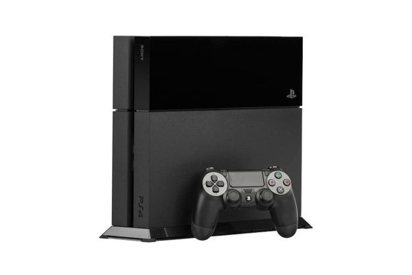
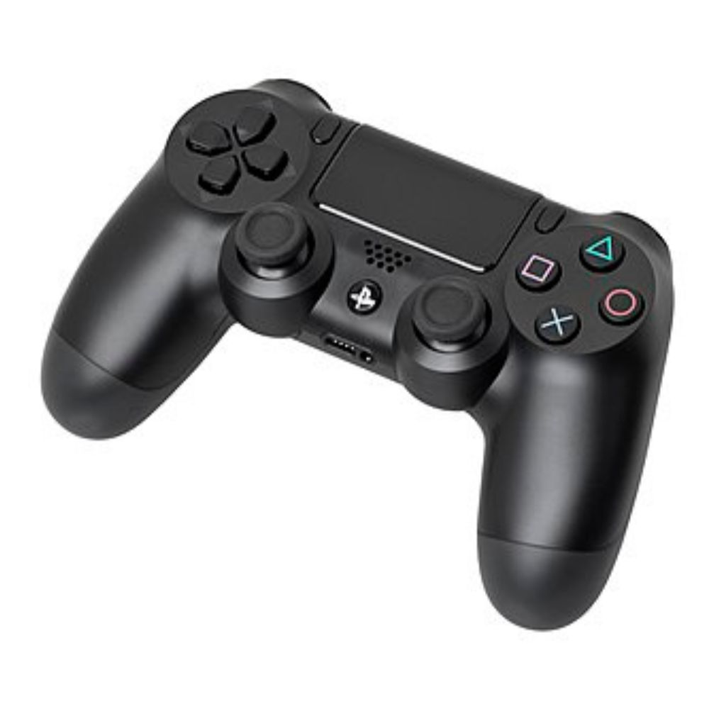
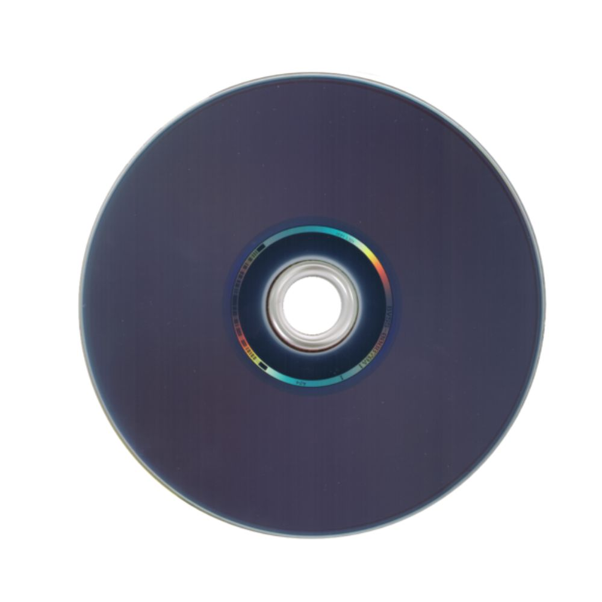

PlayStation 4

O PlayStation 4 (PS4)(プレイステーション4, Pureisutēshon Fō; oficialmente abreviada como PS4) é um console de videojogos, da oitava geração com arquitetura x86, produzida pela empresa Sony Interactive Entertainment e lançada em novembro de 2013, como a quarta edição da série PlayStation, sucessora do PlayStation 3, competindo directamente com a Wii U da Nintendo e, com a Xbox One da Microsoft.
Foi anunciada em fevereiro de 2013 durante uma conferência de imprensa da Sony em Nova Iorque, no evento "PlayStation Meeting 2013" cujo tema foi "O Futuro da PlayStation". Foi lançada na América do Norte a 15 de novembro de 2013, na Europa e América do Sul a 29 de novembro de 2013 e no Japão a 22 de fevereiro de 2014. O PlayStation 4 é a primeiro console da Sony a ser oficialmente e legalmente editada na China desde o PlayStation 2, depois do levantamento da proibição que durou 14 anos.
Afastando-se da arquitectura Cell da sua antecessora, o PlayStation 4 é a primeiro da série da Sony que apresenta arquitectura x86, mais especificamente com a Unidade de Processamento Acelerado (UPA) AMD x86-64, uma plataforma amplamente usada e comum em muitos dos microcomputadores modernos. A ideia é fazer com que o desenvolvimento de jogos eletrónicos seja mais fácil para o console, atraindo uma ampla gama de grandes e pequenos produtores. Estas mudanças destacam o esforço da Sony para melhorar as lições aprendidas durante o desenvolvimento, produção e lançamento do PlayStation 3. Outros recursos de hardware notáveis do PlayStation 4 incluem 8GB GDDR5 de memória, um leitor Blu-ray mais rápido e um GPU que consegue um desempenho de 1.843 TFLOPS/s. Em conversa para a revista Edge, vários produtores de videojogos descrevem a diferença de desempenho entre o PlayStation 4 e o Xbox One como "'significativa' e 'óbvia'"
O console permite vários métodos de interactividade com outros serviços e aparelhos incluindo; o PlayStation App, uma aplicação que melhora e expande a interactividade com o console usando aparelhos iOS e Android; o Remote Play, que permite activar oPlayStation 4 à distância para continuar a jogar num segundo ecrã via PlayStation Vita ou dispositivos Xperia; o PlayStation Now, um serviço de computação em nuvem baseado em Gaikai, que oferece videojogos e outros conteúdos em stream. Pela incorporação de um botão de partilha (SHARE) no novo comando, o DualShock 4, faz com que seja possível exibir conteúdo que está a ser jogado e transmitido ao vivo aos amigos, ou mesmo partilhar jogos através da característica 'Share Play', desta maneira a Sony planeia colocar assim mais foco nos aspectos sociais do console.
História
De acordo com Mark Cerny, arquitecto-chefe do sistema, o desenvolvimento da oitava geração de consoles da Sony, a PlayStation 4 (PS4), começou em 2008. Menos de dois anos antes, o PlayStation 3 tinha sido lançada oficialmente, depois de meses de atrasos relacionados com problemas na produção. O atraso colocou a Sony quase um ano atrás da Xbox 360 da Microsoft, que já estava próxima das 10 milhões de unidades vendidas quando o PlayStation 3 foi lançado. Jim Ryan, CEO da PlayStation Europa, disse que a empresa nipónica queria evitar repetir o mesmo erro com a PlayStation 4.
Em 2012, começaram a aparecer rumores de que a Sony estava a enviar kits de desenvolvimento para produtores de jogos, que consistia num PC modificado executando o chipset AMD Accelerated Processing Unit (antes AMD Fusion).
O PlayStation 4 é a primeiro console da Sony a ser oficialmente e legalmente editado na China desde o PlayStation 2, depois do levantamento da proibição que durou 14 anos. A Sony finalizou as negociações com o Governo chinês em maio de 2014 por forma a vender os seus produtos nesse território, com o PS4 a ser o primeiro a ser lançado. Kazuo Hirai, chefe executivo, disse:
"O mercado chinês, apenas pelo seu tamanho, é obviamente um grande mercado com potencial para os produtos de videojogos ... Acho que podemos ter o mesmo sucesso que tivemos noutras partes do mundo com o PS4."Com lançamento inicial previsto para 11 de janeiro de 2015, a Sony, devido a várias razões, optou por riscar dos planos a data previamente definida. Uma das fontes do Reuters disse que uma dessas razões é a negociação prolongada com as autoridades chinesas. O lançamento naquele território foi a 20 de março de 2015.
Controles
O DualShock 4 é o controlador principal da PlayStation 4, com preços $59 US$59 CA/€59/£54. É semelhante ao DualShock 3, a conexão com o console é via Bluetooth 2.1 + EDR. O DualShock 3 não será compatível com a PlayStation 4. O DualShock 4 está equipado com vários recursos novos, incluindo uma base táctil de dois pontos na parte da frente do controlador, que pode ser clicado. O controlador irá suportar a detecção de movimento por meio de um giroscópio de três eixos juntamente com três eixos de acelerómetros que contêm vibração melhorada. Inclui uma bateria de lítio-ion recarregável mas não-removível, capaz de armazenar 1 000 mAh. O projecto experimental pesava 210 g (7,4 oz), tem dimensões de 162 × 52 × 98 mm (6,4 × 2,0 × 3,9 in), e tem um suporte de plástico e borracha para aumentar a aderência. O exemplar mostrado no evento da revelação da PlayStation 4 era de um produto quase final
. O DualShock 4 é o primeiro controlador PlayStation da Sony oficialmente compatível com Windows.
O DualShock 4 tem os seguintes botões: o botão PS, o botão SHARE, o botão Opções, d-pad (direccionais), os botões de ação (triângulo , círculo , cruz , quadrado ), botões de ombro (R1/L1), gatilhos (R2/L2), dois joysticks analógicos com botão clicáveis (L3/R3) e uma base táctil de dois pontos. Estas mudanças marcam vários diferenças do DualShock 3 e de outros controladores anteriores da PlayStation. Os botões START e SELECT foram fundidos num único botão OPÇÕES. Um botão de SHARE (partilha) permite aos jogadores fazer uploads de vídeo a partir das suas experiências de jogo. Os joysticks analógicos e os gatilhos foram redesenhados com base em opiniões recolhidas junto dos produtores, apresentando agora uma superfície mais côncava, similar ao comando da Xbox 360.

Jogos
Jack Tretton, chefe-executivo da Sony Computer Entertainment of America (SCEA), afirmou que os jogos para a PlayStation 4 têm preços desde US$0,99 até US$60,00, não marcando por isso um aumento de preços em relação à geração anterior. Em conversa com o site IGN, o CEO da Sony Computer Entertainment Europe, Jim Ryan, declarou que, mesmo com a "tendência crescente do consumo digital", o Blu-ray será o "principal veículo de distribuição nos grandes jogos na PS4." Os jogos na PlayStation 4 não são bloqueados por regiões.
Em resposta às preocupações em redor da possibilidade de medidas de DRM para bloquear as vendas de jogos usados (em particular, as politicas DRM inicialmente previstas para a Xbox One, que continham essas restrições), o CEO da SCEA Jack Tretton, explicitou em discurso durante a conferencia de imprensa da Sony na E3 que "não há restrições" nas revendas ou trocas nos formatos físicos para os jogos PS4, enquanto que Scott Rohde, chefe de produção dos produtos de software, disse que a Sony também estava a planear desaprovar as chaves online, ao afirmar que as politicas foram desenhadas para serem "amigas dos consumidores, dos retalhistas e dos publicadores." A consola também não exige uma ligação permanente à Internet para validações constantes via online.
A companhia espera facilitar a produção de jogos por parte de produtores independentes na PlayStation 4, Durante o evento E3 2013, a Sony revelou que permite aos produtores auto-publicarem os seus títulos na PlayStation Network para PlayStation 3, 4 e PlayStation Vita. Os produtores também poderão usar o PlayStation Blog e as contas Twitter e Facebook da Sony para promoverem os seus jogos para a PS4. Se for solicitado pelos produtores, a Sony também poderá fornecer feedback opcional para os jogos que estejam em produção. Também foi anunciado que pelo menos dez títulos de produtores independentes seriam lançados para PlayStation 4 até ao fim de 2013. A Sony confirmou que todos os seus estúdios internos bem como todos os estúdios de terceiros, já estão a trabalhar na PlayStation 4.
O sistema conta com a possibilidade de transferência de conteúdo digital, incluindo jogos completos, semelhantes ao que já está disponível para PlayStation Portable, PlayStation Vita e PlayStation 3. Todos os jogos de retalho para PlayStation 4 podem ser transferidos online, assim como todos terão demonstrações gratuitas. Em adição será possível ao jogador aceder à sua colecção de jogos digitais em qualquer console PlayStation 4, fazendo ligação à conta onde foram comprados.

THE LAST OF US PART 1Gameplay- demonstração do jogo.
Especificações
| CPU | GPU | ||
|---|---|---|---|
| Fabricante: | AMD (Jaguar) – 8 núcleos | Desempenho: | 1,84 TFLOPS (Radeon-based) |
| Clock: | ≈ 1,6 GHz (varia por versão) | Memória de sistema: | 8 GB GDDR5 unificada |
| Barramento / arquitetura: | x86-64 custom chip | ||
| Áudio | Mídia | ||
| Formato: | Blu-ray Disc / DVD / CD | Capacidade: | 500 GB HDD (modelo base) |
| Saída áudio: | Até 48 kHz, multicanal | ||
| Memória / Outros | |||
| RAM principal: | 8 GB GDDR5 | Dimensões (aprox): | ≈ 275×53×305 mm (modelo base) |
| Peso: | ≈ 2,8 kg | ||